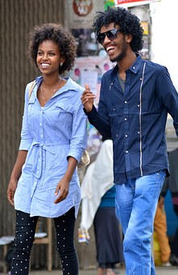
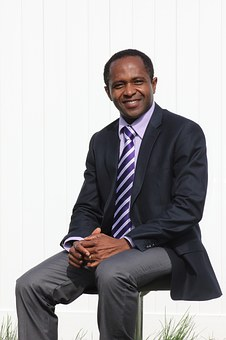

PRESCO SUARL
Est spécialisée dans la restauration d'Entreprise et structurée comme suit-Un Gérant hautement qualifié au nom de Monsieur BINONG Zachée,Technicien en Art culinaire avec une expérience de 39 ans et Promoteur de PRESCO SUARL en date du 14 Juillet 2009, ex Camp Boss Sodexo qui a exercé dans plusieurs exploitation pétrolières et hôtelières.
Pourquoi Nous Choisir?
-
Moins Chère
Dans ce domaine, contrairement à ce qui se passe en restauration commerciale, le client ne paie pas le prix réel, une grande partie du coût étant assuré par l'employeur ou l'institution.
-
Personel qualifié
Un Gérant hautement qualifié au nom de Monsieur BINONG Zachée,Technicien en Art culinaire avec une expérience de 39 ans et Promoteur de PRESCO SUARL en date du 14 Juillet 2009, ex Camp Boss Sodexo qui a exercé dans plusieurs exploitation pétrolières et hôtelières.
-

Equipe de professionnels en art culinaire
De ce fait, certaines Entreprises de la place et certains particuliers ont eu à découvrir les divers rouages de nos oeuvres de créativité et d'ingéniosité ; dont la plus récente est la SCDP (Société Camerounaise des Dépots Pétrolier
-

Objectifs Interessants
PRESCO SUARL cherche à s'implanter et de constituer une Base vie ; nous sommes prêt à gérer les Cantines et les Clubs d'Entreprises, cela serait bien accueilli et pour vos entières satisfactions.